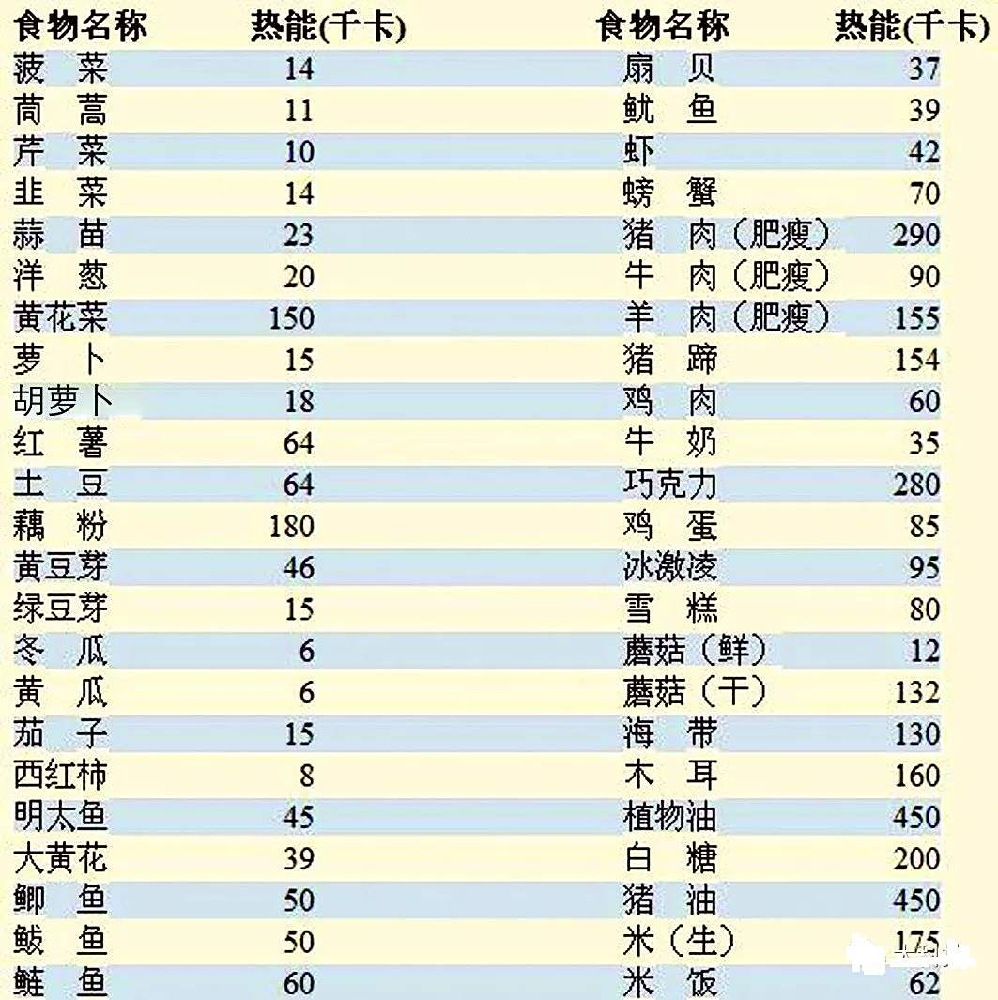

⛹️
了解食物热量，并非为了制造焦虑，而是为了获得更自由的饮食选择。掌握一些基本原则，就能在享受美食的同时，更好地平衡每日的能量摄入。
——蒂普・锡科
做比较：各种食物所含的热量
烹饪方式对热量的影响，有时比食物本身更大。一块鸡胸肉，蒸煮与油炸的热量可以相差数倍。在食堂选菜时，可以优先考虑清蒸、白灼、凉拌（少酱汁）的菜品，这些通常是更轻盈的选择。
很多人会忽略菜肴中的“隐形热量”。例如，一些以蔬菜为主的菜，因为经过了油焖或淋了大量明油，其热量可能远超一份清蒸的肉类。酱料、浓汤和菜品的汤汁往往是额外的热量来源。
将高热量食物与大量蔬菜搭配食用是一个实用的技巧。这不仅增加了膳食纤维和维生素的摄入，增强饱腹感，还能自然平衡整顿饭的总热量。例如，在吃红烧肉时，不妨多打一份没有额外油烹调的绿叶蔬菜。
进食顺序也值得留意。尝试先喝汤（清汤而非浓汤），再吃蔬菜，然后摄入蛋白质（如肉、蛋、豆制品），最后吃主食。这样的顺序有助于平稳血糖，并让人更早产生饱腹感，避免主食过量。

建议大家对常见食物热量有一个基本概念。无需精确到个位数，但能了解哪些食物是能量“大户”，哪些是“轻量级”选手，能帮助你在点餐时快速做出决策。
调味品的选择是饮食中的细节，但累积效应显著。尝试用醋、胡椒、葱姜蒜等天然香料来提味，逐渐减少对高油、高糖酱料的依赖，可以培养出对食材本味的欣赏，这是一种更健康的饮食境界。
这里找到了一个可以查看常見食物热量的网站，感兴趣的同学可以点进去看一看
⇨ 常见食物热量表